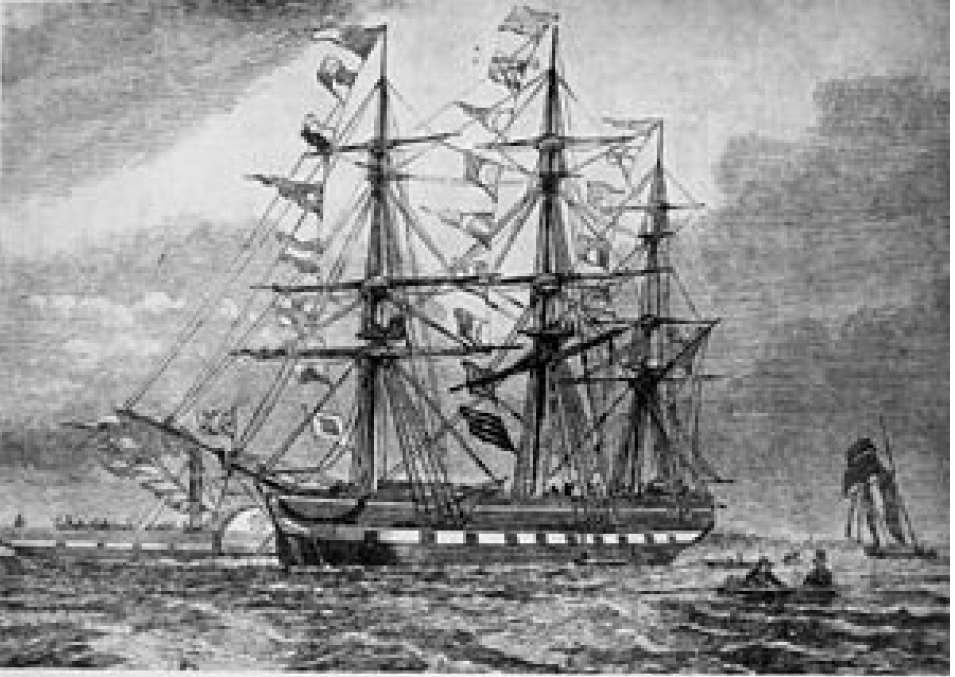
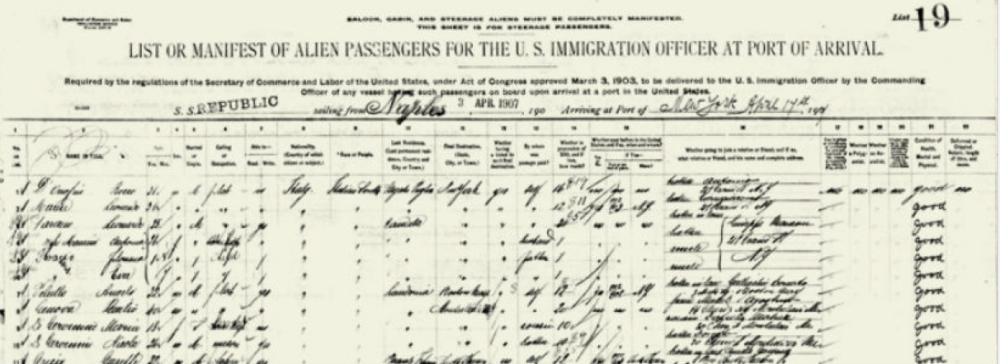

A series of economic and policy changes prompted a new era of mass migration. The first change is the change in migration policy in the US in the 1960s. The Immigration and Nationality Act(1965) shifts away from country of origin quotas and into family- and skill-based migration as well as increases the cap of annual immigrants. There is also Dramatic decline in travel costs (airplanes, information through Internet). Besides, differences in wages between developing and developed countries much larger than those between Europe and the New World in the past. The real wages are 10 times larger in the US than those in some developing countries. Migration to developed countries is highly restricted, especially for those with less education. In general, people nowadays have strong incentives to immigrate to U.S but face strong legal barriers.
 